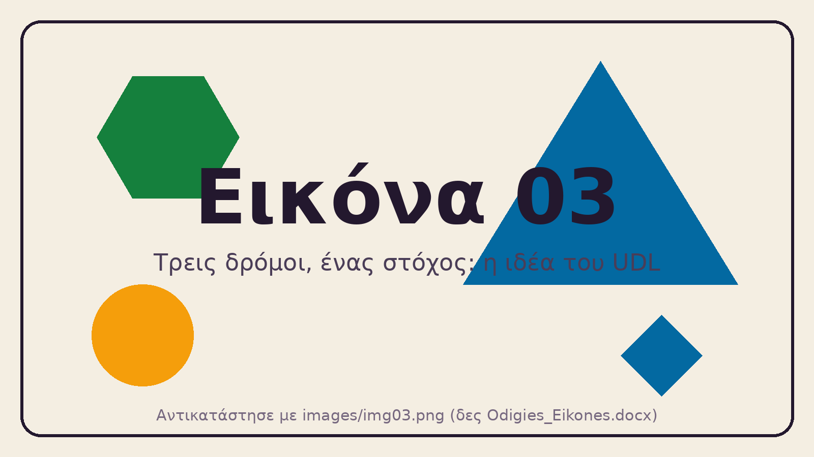

Το UDL δεν είναι μέθοδος διδασκαλίας ούτε λίστα ελέγχου. Είναι ένας τρόπος να σχεδιάζεις από την αρχή για τη μεταβλητότητα των μαθητών, αντί να προσαρμόζεις εκ των υστέρων.
Το UDL αναπτύχθηκε από το CAST στις ΗΠΑ (Rose & Meyer, 2002), με αφετηρία την ιδέα του καθολικού σχεδιασμού στην αρχιτεκτονική: η ράμπα που μπαίνει από την αρχή εξυπηρετεί όλους, όχι μόνο όσους κινούνται με αμαξίδιο. Στη μάθηση, αυτό σημαίνει ότι τα εμπόδια βρίσκονται στον σχεδιασμό του μαθήματος, όχι στον μαθητή.
Τον Ιούλιο του 2024 το CAST δημοσίευσε την έκδοση 3.0 των κατευθυντήριων γραμμών. Ο στόχος μετατοπίστηκε από τον «έμπειρο μαθητή» στην αυτενέργεια του μαθητή (learner agency), με μεγαλύτερη έμφαση στην ταυτότητα, στο αίσθημα του «ανήκειν» και σε γλώσσα με επίκεντρο τον μαθητή.

Κάθε αρχή έχει τρεις κατευθυντήριες γραμμές (έκδοση 3.0). Τα χρώματα είναι αυτά που χρησιμοποιεί και το CAST, και τα κρατάμε σε όλο το site.
Οι ελληνικές αποδόσεις είναι δικές μας. Σε διπλωματική, χρησιμοποίησε και τους αγγλικούς όρους από το udlguidelines.cast.org (π.χ. Welcoming Interests & Identities, Perception, Expression & Communication).
Τη διαφοροποιημένη διδασκαλία την ξέρεις ήδη από το ΠΜΣ. Οι δύο προσεγγίσεις είναι συμπληρωματικές, αλλά ξεκινούν από διαφορετικό σημείο.
| Διαφοροποιημένη διδασκαλία | UDL | |
|---|---|---|
| Πότε | Κυρίως κατά τη διδασκαλία, ως απάντηση σε ανάγκες που εντοπίζονται | Από την αρχή, στον σχεδιασμό |
| Για ποιον | Για συγκεκριμένους μαθητές ή ομάδες | Για όλους, με βάση την αναμενόμενη μεταβλητότητα |
| Πού είναι το εμπόδιο | Στην απόσταση ανάμεσα στον μαθητή και στο πρόγραμμα | Στον σχεδιασμό του περιβάλλοντος μάθησης |
| Παράδειγμα | Ένα απλοποιημένο φύλλο εργασίας για δύο μαθητές | Το φύλλο υπάρχει από την αρχή σε κείμενο, εικόνα και ήχο, και όλοι επιλέγουν |
Αν περιγράφεις μια προσαρμογή για έναν μαθητή και την ονομάζεις UDL, ο/η αξιολογητής/τρια θα το επισημάνει. Ρώτα τον εαυτό σου: η επιλογή υπήρχε για όλους από την αρχή;
Α. Η εκπαιδευτικός διαπιστώνει ότι ο Πέτρος, που έχει δυσλεξία, δυσκολεύτηκε με τις γραπτές οδηγίες, και για το επόμενο μάθημα του ετοιμάζει ηχογραφημένη εκδοχή.
Β. Οι οδηγίες της δραστηριότητας δίνονται εξαρχής ως κείμενο, ως εικονογραφημένα βήματα και ως ηχογράφηση, και κάθε μαθητής διαλέγει.
Το Α είναι διαφοροποίηση: προσαρμογή εκ των υστέρων για έναν μαθητή. Το Β είναι UDL (Αναπαράσταση · 1. Αντίληψη): σχεδιασμός εκ των προτέρων, για όλους. Και τα δύο είναι καλές πρακτικές.
Ο Edyburn (2010) έθεσε ένα ερώτημα που ισχύει ακόμα: θα αναγνωρίζαμε το UDL αν το βλέπαμε; Πολλές μελέτες δηλώνουν ότι εφαρμόζουν UDL χωρίς να περιγράφουν ποιες αρχές και κατευθυντήριες γραμμές εφάρμοσαν και πώς. Οι μετα-αναλύσεις δείχνουν γενικά θετικά αποτελέσματα (π.χ. Capp, 2017), αλλά η ασάφεια στην περιγραφή της εφαρμογής δυσκολεύει τη σύγκριση.
Για σένα αυτό είναι ευκαιρία: μια διπλωματική που λέει ακριβώς ποια κατευθυντήρια γραμμή εφαρμόζεται, πού και πώς τεκμηριώνεται, ξεχωρίζει.